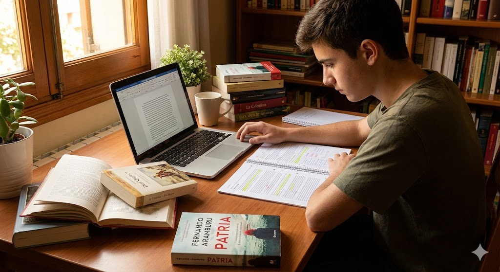
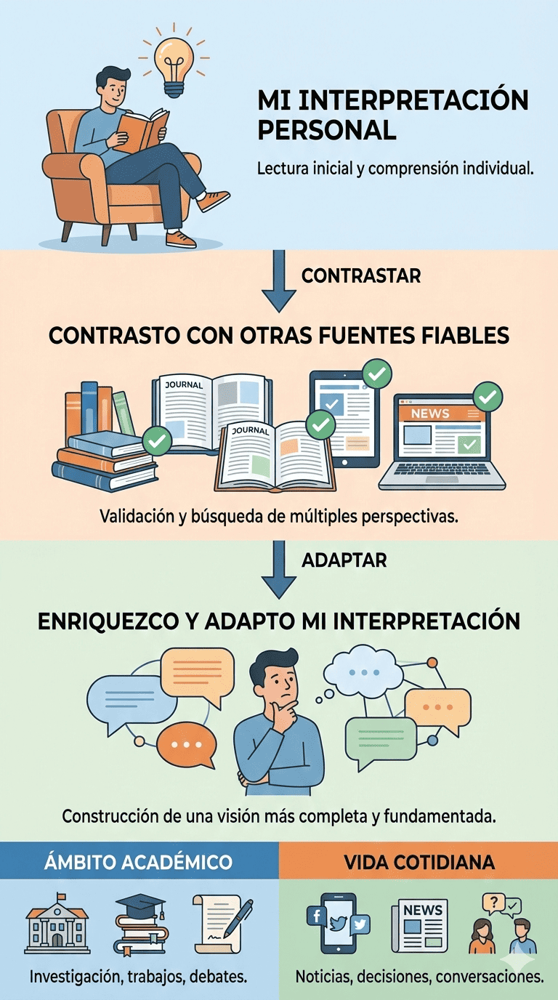

2Bac - Situación de aprendizaje 3.4: El arte de contar y decir: de la palabra al gesto: Nuestra voz en el debate académico
1. Iniciamos el camino
0. Introducción
En la situación de aprendizaje anterior, realizaste un análisis literario profundo de una novela o una obra teatral española contemporánea. Identificaste elementos narrativos o dramáticos, exploraste el contexto sociohistórico de la obra y construiste tu propia interpretación fundamentada. Fue un trabajo valioso que surgió de tu lectura personal, de tu capacidad de análisis y de tu voz crítica.
Ahora, en esta nueva situación de aprendizaje, darás un paso más: transformarás ese análisis literario en un ensayo o análisis académico. ¿Cuál es la diferencia? En el ámbito académico, las interpretaciones no surgen en el vacío. Los ensayos académicos entran en diálogo con otras voces, con otros críticos y estudiosos que también han analizado la misma obra. Tu interpretación ya no estará sola: la pondrás en conversación con fuentes secundarias académicas, las contrastarás, las cuestionarás, las integrarás o las rebatirás para enriquecer y fortalecer tu propia tesis.
Esta SdA te permitirá desarrollar competencias esenciales para el ámbito académico y profesional: buscar, seleccionar y contrastar información especializada; evaluar su fiabilidad y pertinencia; integrarla en tu propio discurso con rigor intelectual; y comunicar tus ideas con la precisión, la claridad y el registro propios de los textos académicos. Con ese fin, recuperarás también las técnicas de alfabetización informacional y argumentación que aprendiste en la SdA 1ª del bloque 2º, aplicándolas ahora a un contexto más complejo y especializado.

Imagen de elaboración propia creada con Gemini (2025). Del análisis literario al ensayo académico(CC BY-NC-SA)
1. Planteamos el reto
¿Alguna vez has defendido una opinión sobre una película, una serie o un libro y alguien te ha respondido: “Pero, ¿qué dicen los críticos?”, o “He leído que, en realidad, significa otra cosa”? En el mundo académico y profesional, las interpretaciones no se construyen de forma aislada. Cuando escribes un ensayo o análisis académico, tu voz entra en diálogo con otras voces: investigadores, críticos, especialistas que antes que tú han reflexionado sobre el mismo tema.
En la SdA anterior, construiste tu propia interpretación de una novela o una obra teatral española contemporánea basándote en tu lectura personal y en el análisis de sus elementos formales. Fue un análisis literario técnico, riguroso y personal. Tu reto será llevarlo un paso más allá: convertirlo en un ensayo académico donde tu interpretación se enriquezca, se matice o se fortalezca al confrontarla con lo que otros expertos han escrito sobre esa misma obra.
Tu desafío en esta situación será:
Recuperar y revisar el análisis literario que elaboraste sobre tu novela u obra teatral seleccionada.
Buscar, seleccionar y evaluar fuentes académicas secundarias sobre esa obra: artículos especializados, ensayos críticos, estudios universitarios, reseñas académicas… aplicando las técnicas de alfabetización informacional que aprendiste en la SdA 1ª del bloque 2º.
Integrar esas fuentes en tu análisis para enriquecer tu interpretación: ¿Coincides con otros críticos? ¿Discrepas? ¿Puedes aportar matices que ellos no consideraron? ¿Qué nuevas perspectivas te ofrecen esas lecturas académicas?
Redactar un ensayo académico en el que defiendas tu tesis sobre la obra, entrando en diálogo con esas otras interpretaciones, citándolas con rigor, respetando la propiedad intelectual y la estructura y las convenciones propias del discurso académico.
Piensa en la satisfacción de no solo tener una opinión, sino de poder defenderla en el marco de una conversación académica rigurosa, donde tu voz se suma a las de otros estudiosos, aportando tu perspectiva fundamentada y en diálogo con la comunidad de lectores expertos.
En el siguiente vídeo, puedes observar cómo realizar un ensayo académico paso a paso:
Las habilidades que desarrollarás en esta situación no son solo académicas: son competencias clave para la vida profesional y ciudadana. En cualquier ámbito donde el pensamiento riguroso, la investigación y la comunicación efectiva sean importantes —periodismo, educación, derecho, ciencias sociales, gestión cultural—, necesitarás saber buscar información especializada, evaluarla críticamente, integrarla en tu discurso y comunicar tus ideas con precisión. Al finalizar esta situación, lograrás:
Gestionar información académica con autonomía. Localizar, seleccionar y contrastar fuentes secundarias especializadas (artículos, ensayos, estudios universitarios) sobre tu obra literaria, evaluando su fiabilidad, calidad y pertinencia para tus objetivos de investigación.
Integrar fuentes académicas en tu discurso. Citar adecuadamente, parafrasear con precisión, respetar la propiedad intelectual y poner en diálogo diferentes interpretaciones de manera ética y rigurosa.
Construir argumentaciones académicas sólidas. Formular una tesis clara sobre tu obra literaria y defenderla mediante argumentos fundamentados, evidencias textuales y el diálogo crítico con otras interpretaciones académicas.
Producir un ensayo académico. Redactar un texto académico coherente, cohesionado y con el registro adecuado, atendiendo a la estructura del ensayo, la precisión léxica, la corrección gramatical y ortográfica, y el uso eficaz de conectores y marcadores discursivos.
Revisar y perfeccionar textos académicos. Planificar, redactar y revisar tu ensayo, incorporando mejoras a partir de la reflexión metalingüística, la consulta de manuales especializados y la revisión colaborativa entre iguales.
Desarrollar pensamiento crítico. Valorar críticamente diferentes interpretaciones de una misma obra, identificar sus argumentos y evidencias, detectar posibles sesgos y construir tu propia posición fundamentada en el diálogo con esas fuentes.
Participar en la conversación académica. Comprender que el conocimiento se construye de forma colaborativa y dialógica, respetando la diversidad de interpretaciones y contribuyendo con tu propia voz a los debates culturales y académicos.
3. Conexión con la vida real
Saber investigar, integrar fuentes especializadas y comunicar ideas con rigor académico son habilidades que te acompañarán toda la vida, mucho más allá del aula. En la universidad, cualquiera que sea tu área de estudio, tendrás que elaborar trabajos de investigación, ensayos, informes y proyectos donde demostrar que sabes buscar información fiable, evaluarla críticamente, integrarla en tu discurso y defender tus ideas con argumentos sólidos.
Pero estas competencias no son solo universitarias. En el ámbito profesional —ya sea en periodismo, educación, gestión cultural, comunicación, derecho, ciencias sociales o cualquier campo donde se valoren el pensamiento crítico y la comunicación efectiva—, tendrás que analizar información compleja, contrastar fuentes, evaluar su credibilidad y presentar tus conclusiones de manera clara y fundamentada.
En la vida cotidiana, también enfrentas constantemente información que debes evaluar: noticias, artículos de opinión, estudios, informes, debates en redes sociales… ¿Cómo sabes qué fuentes son fiables? ¿Cómo distingues entre opiniones superficiales y análisis fundamentados? ¿Cómo construyes tu propia posición informada sobre temas complejos? Las habilidades de alfabetización informacional y argumentación académica que desarrollarás en esta situación te convertirán en un ciudadano crítico, capaz de participar de forma reflexiva y fundamentada en los debates culturales, sociales y políticos de tu entorno.

Infografía de elaboración propia creada con Gemini (2025). Desde la interpretación personal al ensayo académico(CC BY-NC-SA)
En el contexto específico de los estudios literarios, entrar en diálogo con fuentes académicas no solo enriquece tu interpretación personal, sino que te conecta con una comunidad de lectores expertos que llevan décadas reflexionando sobre las mismas obras que tú estás analizando. Tu voz se suma a esa conversación, aportando tu perspectiva, tus preguntas, tus descubrimientos. Es una experiencia intelectual profundamente enriquecedora y una forma de participar activamente en la cultura de tu tiempo.
En esta situación de aprendizaje, aprenderás a transformar tu análisis literario personal en un ensayo académico riguroso, donde tu interpretación dialogará con las de otros críticos y estudiosos, fortaleciendo tu capacidad de pensar, investigar y comunicar con precisión y rigor intelectual.
Leer en comunidad hace que nuestra comprensión e interpretación de un texto sea más profunda porque estará cobijada por esas otras voces (...). La lectura de los otros nos llevará a ver más profundo en el texto. Y, por otra parte, la lectura compartida con otros nos ayudará a construir comunidad. Leer en colectivo no se trata sólo de leer junto a otros lectores, sino leer CON otros, y esto requiere de disposición a la escucha atenta, horizontalidad y colaboración para desentrañar el sentido del texto.